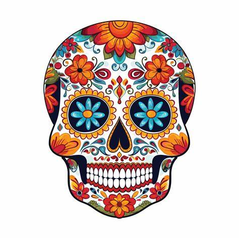

Mi Sitio
Inicio
Ofrenda
Cempasúchil
Calavera
Papel Picado
Dia de muertos
Prodras encontrar algunas cosas sobre la celebridad del dia de muertos
Ofrenda:
Un altar decorado con fotos, comida y objetos favoritos de los difuntos.
Cempasúchil:
La flor de los muertos, que guía a las almas con su aroma.

Calaveras:
Representaciones de la muerte que simbolizan la celebración de la vida.
Papel Picado:
Un arte tradicional que decora los altares y espacios de la celebración.